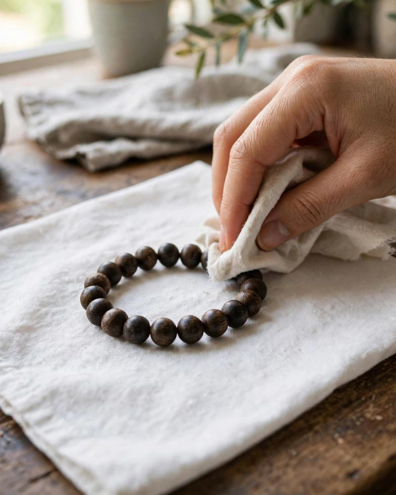

新买的手串可以先盘几天：用干净的棉布，轻轻擦拭珠子表面，把浮尘和加工残留擦掉。盘的时候别用力，沉香质地软，用力会留下划痕。
盘的目的是清洁和抛光，不是包浆。沉香手串不需要盘出包浆，盘得太狠反而会把油脂盘掉，香味变淡。
戴手串的时候避开水：洗手、洗澡、游泳、下雨，都先摘下来。沉香沾水会发霉、变味，干了之后香味也会变淡。
避开化学品：香水、洗手液、护手霜、酒精，都不要直接接触手串。喷香水的时候先摘手串，干了再戴。
避开硬物：沉香质地软，磕碰会留下痕迹。运动、干活的时候先摘下来，放好。
不戴的时候，把手串收进密封袋或小盒子里，单独存放，不要和其他手串、香材混放。沉香会串味，混放时间长了香韵会变。
存放的地方要阴凉干燥，避开阳光和潮湿。抽屉、柜子都可以，窗台、卫生间不行。
日常灰尘：干布轻轻擦掉就行。沾了汗：干布擦干，放在阴凉处透透气，干了再收起来。
沾了水：立刻用干布吸干，放在阴凉通风处自然阴干，不要暴晒、不要用吹风机。干透了再戴。
沾了化学品：干布擦掉，通风散味。化学品渗进去的，香味可能已经受影响，散味要一段时间。
手串的绳子也是消耗品：弹力绳用久了会松、会断。发现绳子松了，及时换绳，别等断了珠子散一地。
换绳的时候顺便检查珠子：有没有裂、有没有掉油线。换绳可以自己换，也可以找商家换，成本不高。
正常。手串戴在手上，香味会慢慢挥发，闻着越来越淡。这是沉香的自然规律，不是假货。
想恢复香味：把手串放进密封袋，密封几天，香味会重新聚起来。或者用电熏炉低温熏一下珠子旁边的碎料，闻一闻本味还在不在。
香味变淡和串味是两回事：变淡是本味弱了，串味是杂味进来了。串味的处理见文章 24。
| 保养 | 怎么做 | 不能怎么做 |
|---|---|---|
| 盘 | 棉布轻擦，去浮尘 | 用力盘、盘包浆 |
| 戴 | 避水、避化学品、避硬物 | 戴着洗手洗澡、喷香水 |
| 放 | 密封袋、小盒子，单独存放 | 和其他手串混放、放窗台卫生间 |
| 脏了 | 干布擦、阴干 | 水洗、酒精擦、暴晒 |